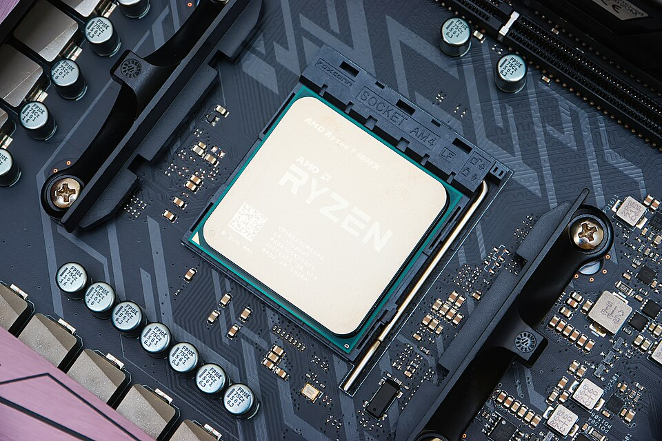
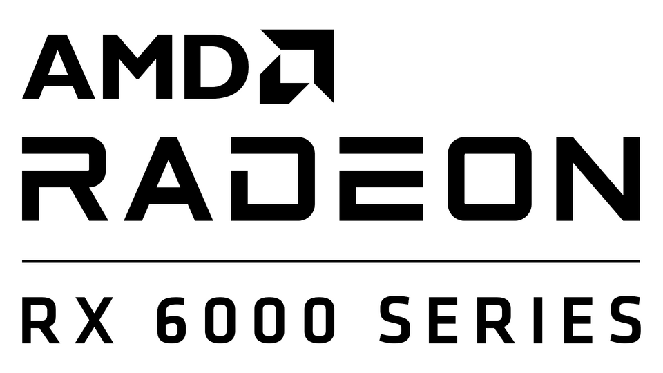

설립연도
1969년
컴퓨터의 두뇌인 CPU와 그래픽·AI 계산용 GPU를 설계하는 회사예요. 공장 없이 설계만 하고 생산은 TSMC에 맡겨요. 2014년 리사 수 CEO가 취임한 뒤 PC·서버 CPU에서 인텔을 크게 추격했고, AI 칩에서는 엔비디아의 경쟁자로 꼽혀요. 2025년 매출은 346억 달러였어요.
칸에 마우스를 올리거나 누르면 자세한 설명을 볼 수 있어요.
데이터센터 서버의 CPU(에픽)와 AI 학습·추론용 GPU(인스팅트)를 팔아요. 2025년 오픈AI와 대규모 GPU 공급 계약을 맺으며 AI 칩 사업을 키우고 있어요.
대표 예에픽(EPYC) CPU, 인스팅트(Instinct) GPU

노트북과 데스크톱에 들어가는 라이젠 CPU예요. 인텔과 경쟁하며 점유율을 크게 늘렸어요.
대표 예라이젠(Ryzen) CPU

게이머용 라데온 그래픽카드를 만들고, 플레이스테이션과 엑스박스 게임기에 들어가는 칩도 설계해요.
대표 예라데온(Radeon), 게임기 칩
2022년 인수한 자일링스의 칩으로 통신 장비, 자동차, 산업 장비, 우주 장비에 들어가는 맞춤형 칩을 팔아요.
대표 예FPGA, 적응형 SoC
원화 금액은 1달러 = 1,334.9원(2026년 11월 27일 유럽중앙은행 기준환율)으로 환산한 대략적인 값이에요.
| 기간 | 매출 | 영업이익 | 순이익 |
|---|
사업마다 겨루는 상대가 달라요